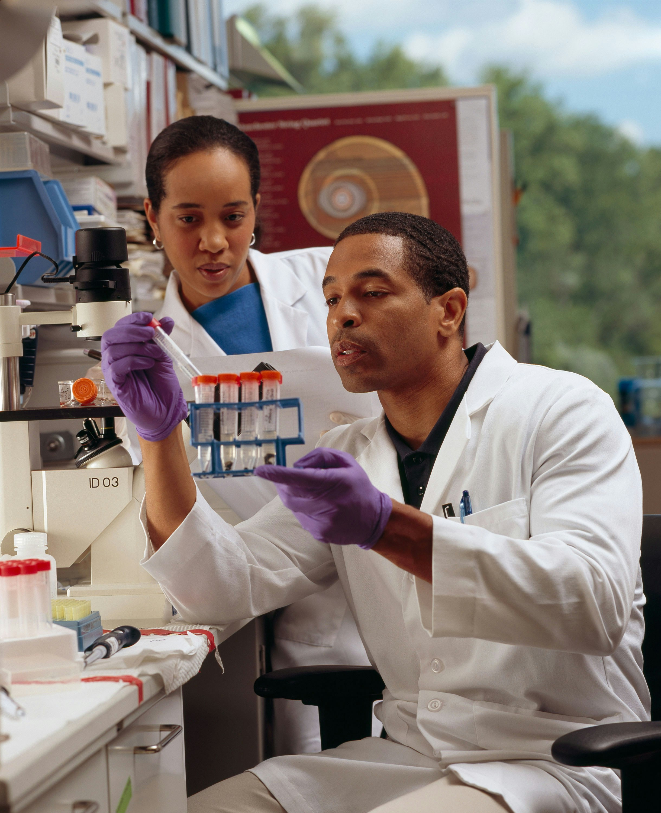

Your Full-Service Lab for Clinical Diagnosis & Research
HealthCheck Diagnostic Center represents a collaborative partnership between Korle-Bu Teaching Hospital, Mindray Global, and Lynch Medical Services Limited. KML is a corporate body founded on the strength and expertise of these three health institutions, bringing together decades of experience and professionalism in healthcare. The idea to establish a state-of-the-art laboratory with advanced technology was initially conceived by Lynch Medical Services. To bring this vision to reality, Lynch partnered with Korle-Bu Teaching Hospital, combining clinical excellence with operational expertise. This initiative has been further strengthened and supported by Mindray Global, ensuring access to cutting-edge medical equipment and technology. HealthCheck Diagnostic Center is an extension of the A&E Lab, which has been providing quality diagnostic services since 2019. Today, it stands as a modern, fully-equipped facility committed to delivering accurate, timely, and reliable health testing for patients and healthcare providers alike.
Our Mission, Vision & Core Values
Mission
To offer timely, innovative, quality and emergency medical laboratory services to all patients within and outside Korle-bu Teaching Hospital with the best State of the Art Laboratory Equipment in Ghana and West African sub region.
VISION
To become the leading Medical Laboratory Centre of Excellence in Ghana and West Africa.
CORE VALUES
- Conservation
- Intergrity
- Loyalty
- Proffessionalism
- Innovation
- Time Saving
